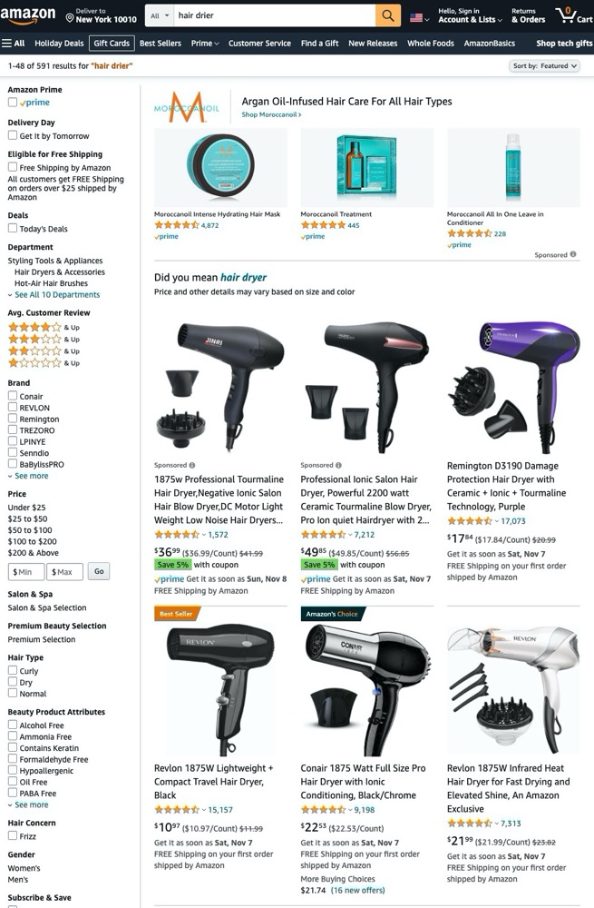
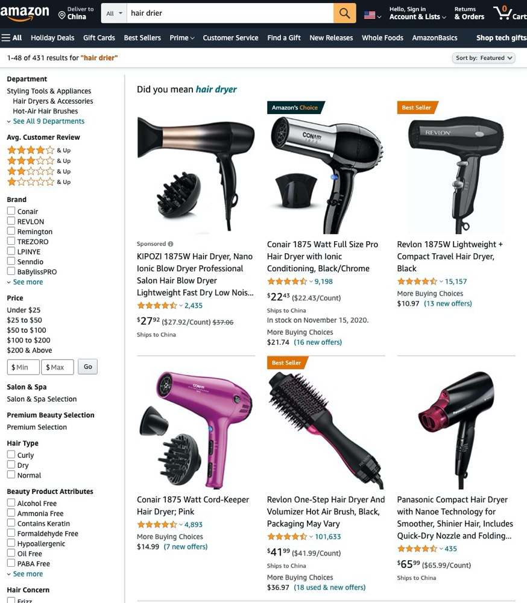
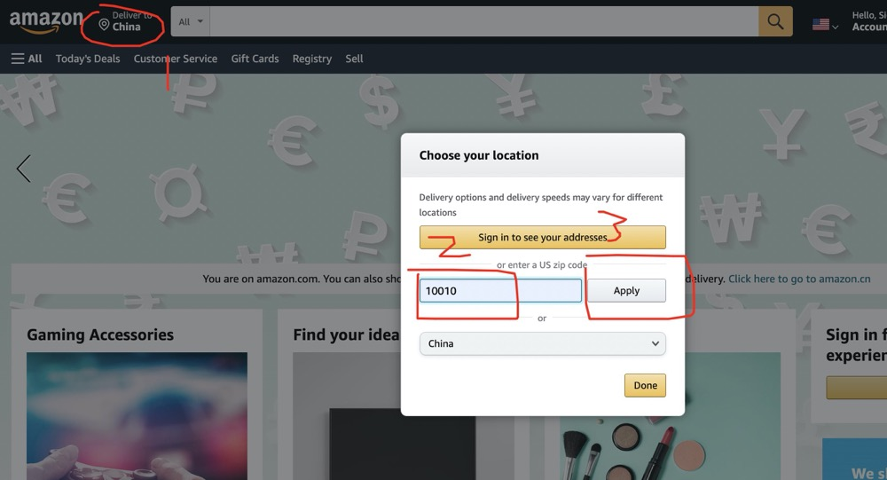
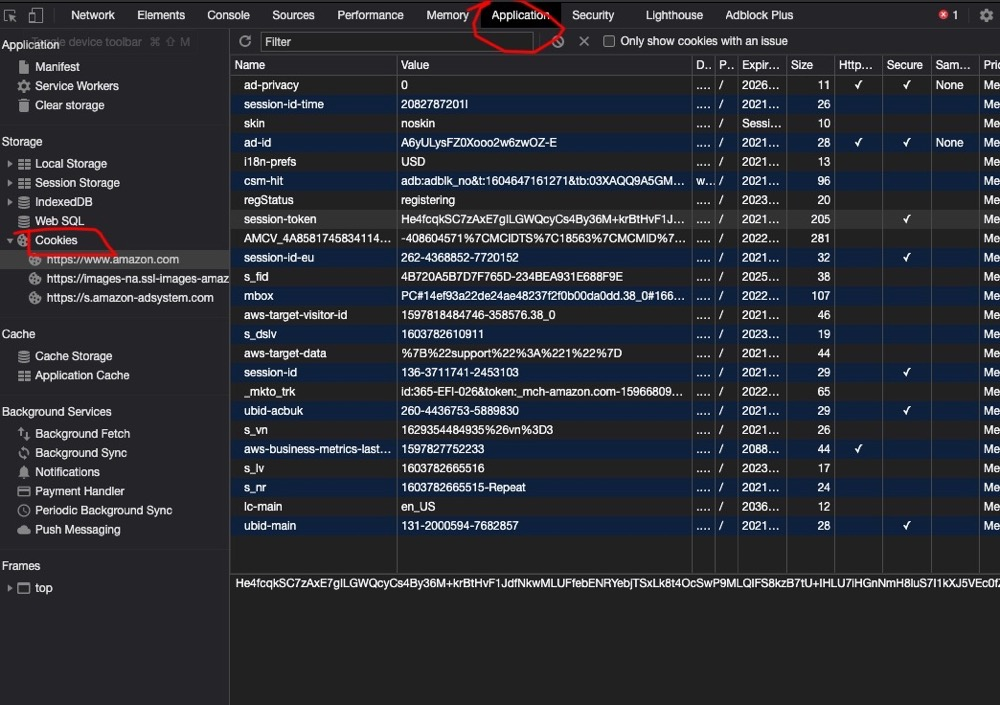

amazon spide（邮编请求）
背景
amazon 使用关键词搜索的过程中，会将不发货到默认地址（本级IP）的商品剔除。这样的爬虫数据没有意义，运营人员需要获取当地用户的视角，来判断商品目前的价值。
数据对比，可以看到商品信息和广告信息都是不一样的。
美国邮编下的展示

中国收货地址的展示

解决方案
两种不需要用户登陆的解决方式。
| 方法 | 优点 | 缺点 |
|---|---|---|
| 使用当地IP | 不需要修改爬虫任务 | 爬虫部署复杂 对应成本增加 |
| 使用IP绑定session | 需要增加爬虫前置逻辑 增加邮编检查 |
成本低 |
编写程序
下面会讲解如何使用IP 去绑定session ,并请求相关数据。
用户如何处理
首先我们需要知道用户是如何操作的。以 US 站点为例，以用户的方式设置邮编为 10010

判断
用户在没有登陆的情况下选择了邮编，获取就是当地数据。那么这个邮编信息要么是在cookie（本地），要么是在session （亚马逊服务器）中。

cookie中并没有相关邮编信息，我们初步判断邮编信息是在 session中。
删除 session-id 的值，然后刷新页面查看数据，果然邮编就恢复到了默认的IP地址，可以确定 邮编信息是在session 中。
确定获取数据的流程：